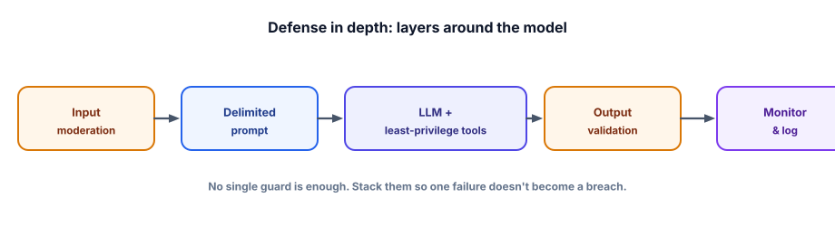

Defense in depth
Every guard in this track is imperfect on its own — moderation misses things, prompts get injected, models get jailbroken. The whole strategy is to layer them so that no single failure becomes a breach. This lesson assembles the pieces into a coherent defense.
Why one layer is never enough
You’ve seen that each defense is probabilistic or partial: prompt hardening reduces but can’t eliminate injection; moderation has false negatives; the model’s refusals can be jailbroken. If you rely on any single one, a single bypass is a full compromise. Defense in depth is the security principle of stacking independent layers so an attacker must defeat all of them, and so a failure of one is caught or contained by another. Combined with least privilege — giving the system only the access it needs — it shrinks both the chance and the impact of a breach.

Defense in depth uses multiple independent safeguards so that the failure of any one doesn’t cause a breach. For LLM apps the layers are: input moderation (block unsafe requests), prompt hardening (fence untrusted text as data), least-privilege tools (limit what the model can do), human-in-the-loop (approval for risky actions), output validation (sanitize before use), and monitoring (detect and respond to what slips through). Least privilege ensures even a fully-hijacked model can do little harm.
A guarded request pipeline that stacks the defenses from this whole track:
def handle(user_msg, user):
log("request", redact(user_msg), user.id) # monitor + PII redaction (7.4)
if is_unsafe(user_msg): # 1) input moderation (7.5)
return refuse()
prompt = [{"role":"system","content": SYSTEM_RULES}, # 2) prompt hardening (7.2)
{"role":"user","content": f"<data>{user_msg}</data>"}]
out = agent(prompt, tools=tools_for(user), # 3) least-privilege tools (4.8)
require_approval={"refund","delete"}) # 4) human-in-the-loop (4.8)
out = validate_output(out) # 5) output validation (7.6)
if is_unsafe(out): # 6) output moderation (7.5)
return refuse()
log("response", redact(out), user.id) # monitor
return outNo layer here is trusted to be perfect. If moderation misses, the prompt is hardened; if the prompt is injected, the tools are least-privilege; if a risky action is requested, a human approves; if the output is unsafe or malformed, validation and output-moderation catch it; and everything is logged so you learn from whatever slips through.
- Every single guard is imperfect — layer independent defenses so one failure isn’t a breach.
- The stack: input moderation → prompt hardening → least-privilege tools → human approval → output validation → monitoring.
- Least privilege is the most powerful layer: a hijacked model that can’t do much can’t cause much harm.
- Assume each layer leaks; design so the blast radius is contained.
- Match the depth to the risk — an internal tool needs less than a public, action-taking agent.
Across this track, which single layer most reduces the impact of a successful prompt injection or jailbreak?
1. Trace what happens to an injection attempt as it passes through the layered pipeline above — where might each layer stop or contain it?
2. Why is “independent” the key word in “independent layers”?
3. Design the appropriate defense depth for (a) an internal employee Q&A bot vs (b) a public agent that can issue refunds. How do they differ?
▸ Show solutions & reasoning
1. Input moderation might catch an obviously abusive attempt; prompt hardening (fencing the text as data) may make the model ignore the injected instruction; if it doesn’t, least-privilege tools mean the model can’t do anything dangerous; a risky action it does attempt hits human approval; the output is validated (no unsafe markup/actions) and moderated; and the whole thing is logged so you detect the attempt and add it to your tests. The attack must beat every layer to cause harm — and even then, least privilege limits what “harm” can be.
2. Because layers that fail the same way give false confidence — if your input filter and output filter are the same model with the same blind spot, an attack that beats one beats both. Independence (different mechanisms: a classifier, code-level limits, a separate moderation model, human review) means an attacker must defeat genuinely different defenses, and a weakness in one doesn’t imply a weakness in another. That’s what makes stacking actually multiply security rather than just look thorough.
3. (a) The internal bot is low-risk (trusted users, read-only, no money/actions), so light defenses suffice: basic moderation, sensible prompt, PII care in logs, monitoring. (b) The public refund agent is high-risk (untrusted users, irreversible money-moving action), so it needs the full stack: input/output moderation, hardened prompts, strict least-privilege tools, hard code-level refund limits + human approval, output validation, and tight monitoring/rate-limiting. Match the investment to the assets and exposure — over-securing an internal tool wastes effort, under-securing a public action-taker is dangerous.
The throughline of this entire track is a mindset shift: you cannot make the model safe, so you make the system safe around it. The model is a brilliant, gullible component that processes untrusted text and (often) takes actions; treat it like any untrusted, internet-facing component and apply decades of security wisdom — least privilege, defense in depth, validate everything crossing a boundary, assume breach, monitor and respond. None of the individual techniques are exotic; the skill is composing them appropriately and never trusting any single one (including the model’s good behavior).
Two closing principles. First, security is proportional: a careful threat model (Lesson 7.1) tells you which assets and exposures actually matter, so you can invest depth where it counts and avoid security theater where it doesn’t. Second, safety is continuous, not a checkbox: attacks evolve, so you red-team, fold successful attacks into your eval suite (Track 6), monitor production, and update defenses — the same flywheel that drives quality also drives safety.
Master this and you can put an LLM in front of real users, and even give it real capabilities, with justified confidence. That confidence — earned through layered, measured, evolving defenses — is what it means to ship a trustworthy AI product, which is the whole point of being an applied GenAI engineer rather than a demo-builder.
You can now defend an LLM product against the adversarial world. Time to pressure-test it. On to the Track 7 interview check.